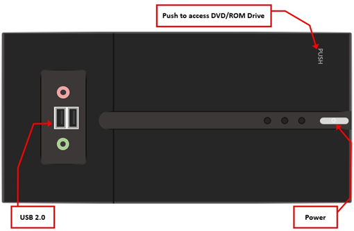
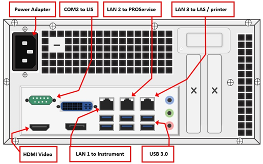
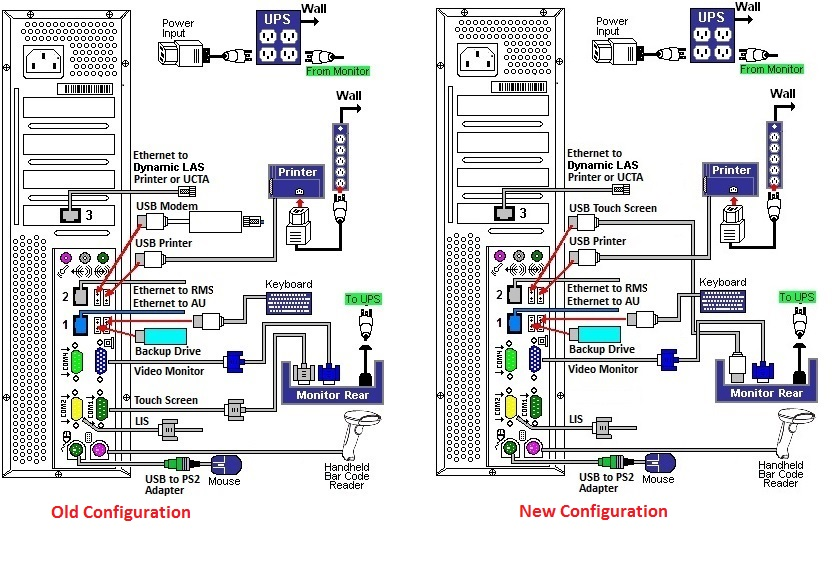
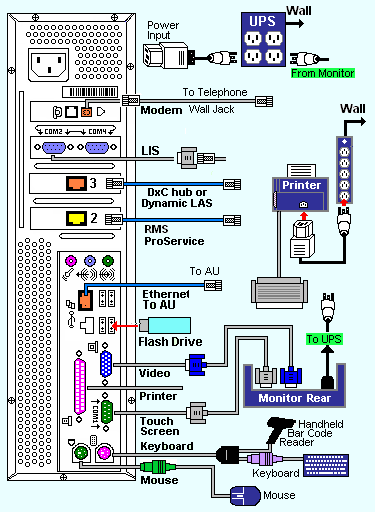
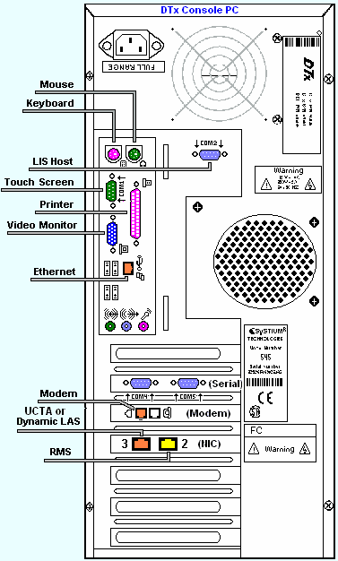
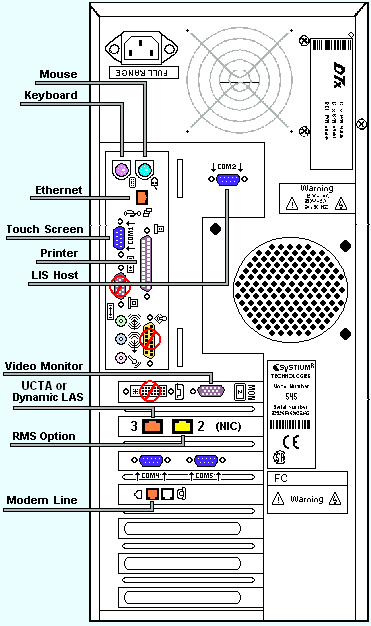

Console PC Connector Identification
Purpose
This procedure provides details for identifying the connectors on the rear of the Console PC.
Note: Refer to the Access Parts manual for the specific part number for a console PC.
Windows 10 - Mini PC

Note:
The connectors on the front and rear of the new mini PC include:
Front:
- Power - External PC power cable
Rear:
- USB 3.0 (4 blue USB connectors)
- External CD Drive (must be connected to blue USB connector or it may not work)
- Other connectors are available for any other USB cables
- USB 2.0 (6 connectors, not blue). Use an available USB 3.0 connector if more than 6 connectors are needed.
- Monitor Touch Cable
- New style monitor - direct USB A to B cable (comes with monitor)
- Previous monitor versions - Serial cable (need USB to Serial adapter cable)
- Tan monitors must be replaced
- Printer (unless using network printing)
- Mouse
- Keyboard
- USB flash drive for backups
- Barcode reader (replace existing cable on barcode reader with USB cable
- Monitor Touch Cable
- LAN1 - Ethernet to Hub
- LAN2 - Ethernet to RMS
- LAN3 - Ethernet to UCTA (integrated DXI only) or Printer or Dynamic LAS
- Video - (All monitor versions use the DVI to HDMI adapter cable that comes with the PC)
Windows 8 3rd version PC (DxI Only)


The connectors on the front and rear of the Bahamas 3 PC include:
Front
- Two USB 2.0 connectors (not blue) to connect a USB flash drive (for backups). If more than two connectors are needed, use an available blue USB 3.0 connector on the rear of the PC.
- Internal DVD/CD-ROM drive
- Power push button
Rear
- Six blue USB 3.0 connectors to connect the
- Monitor touch cable. Use the USB-A to USB-B adapter cable that comes with the monitor. For older monitors, use a USB to RS232 Serial adapter cable to connect the monitor.
- Printer (for local, non-network printing)
- Mouse
- Keyboard
- Barcode reader. Replace the existing cable on the barcode reader with the USB cable.
- COM2 to LIS
- LAN1 - Ethernet to Instrument
- LAN2 - Ethernet to PROService RMS
- LAN3 - Ethernet to one of the following items:
- UCTA (integrated DxI only) -or-
- Printer -or-
- Dynamic LAS
- HDMI Video. All monitors use the DVI to HDMI adapter cable that comes with the PC.
- Power Adapter for the power cable
Mini PC

Note:
The connectors on the rear of the new mini PC include:
- USB 3.0 (2 blue USB connectors)
- External CD Drive (must be connected to blue USB connector or it may not work)
- A second connector is available for any other USB cable
- USB 2.0 (6 connectors,
not blue. Use available USB 3.0 connector if more than 6 connectors are needed.)
- Monitor Touch Cable
- New style monitor - direct USB A to B connection (cable comes with monitor)
- Previous monitor versions - serial cable (need USB to Serial adapter cable)
- Tan monitors must be replaced
- Printer (unless using network printing)
- Mouse
- Keyboard
- USB flash drive for backups
- CTA cable (Access 2i only, need USB to Serial adapter cable)
- Barcode reader (must replace existing cable on barcode reader with USB cable
- Monitor Touch Cable
- LAN1 - Ethernet to Hub
- LAN2 - Ethernet to RMS
- LAN3 - Ethernet to UCTA (integrated DXI only) or Printer or Dynamic LAS
- Power - External PC power pack
- Video - (All monitor versions use DVI to mini adapter cable that comes with the PC)
Windows XP - Small Form Factor DTx PC
The connectors on the rear of the new small black DTx PC with a silver faceplate are:
- USB Touchscreen
- Com 2 LIS
- Com 4 Not used on DxI
- Network 1 Analytical Unit
- Network 2 RMS
- Network 3 Printer or UCTA
Note:
- SFF = Small Form Factor.
- Do not block the PC ventilation holes.
- Use a USB to PS2 adapter to connect a USB mouse to the PS2 mouse connector. The USB mouse can be connected directly to a USB connector if desired.
- Connect the keyboard to a USB connector and the hand held bar code scanner to the PC keyboard PS3 connector.
- New configuration uses USB cable for Touch Screen. Old configuration uses Serial Port cable for Touch Screen

Small DTx PC
Note:
- Do not block the PC ventilation holes.
- This PC was released with the Windows XP operating system only. A Windows NT version is not available.
- Use the adaptor that comes with the USB optical mouse to connect the mouse to the PS2 mouse connector.
- COM 3 is assigned to the modem and has no external Serial connector.
- Connect the keyboard to the hand held bar code scanner, and then connect the scanner cable to the PC keyboard connector.

Orange Dot, Blue Dot, No Tape DTx PCs
Caution:
- Using the USB connector with Windows NT may cause the PC to lock up.
- Use the adapter that comes with the USB optical mouse to connect the mouse to the PS2 mouse connector. Do not connect the mouse to a USB connector.
Note:
- DTx PCs shipped with the Windows XP operating system may not contain a Tape Drive. Backup is to a USB Backup drive.
- USB support is disabled in the CMOS setup. USB support may be enabled after converting to Windows XP.
- The video connector located below COM1 connector is used on this DTx PC but is disabled by the video expansion card used on the previous version DTx PC.
- COM 3 is assigned to the modem and has no external Serial connector.
- Connect the keyboard to the hand held bar code scanner, and then connect the scanner to the PC keyboard connector.

No Dot DTx PC With NIC Card Modification
Note: The video connector located below COM1 connector is disabled on this PC. Connect the monitor to the video connector on the video expansion card.
